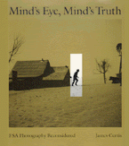

<body bgcolor="#FFFFFF" text="#000000" link="#0000FF" vlink="#CC0000" alink="#CC0000"><center><hr width="350" size="1" align="center" noshade>A thought-provoking study of how photographers created images of the Depression that shaped the public's view<hr width="350" size="1" align="center" noshade><p><a href="https://cdcshoppingcart.uchicago.edu/Cart/ChicagoBook.aspx?ISBN=9780877226277&&PRESS=temple" target="_top">Buy this book!</a> | <a href="https://cdcshoppingcart.uchicago.edu/Cart/Cart.aspx?PRESS=temple" target="_top">View Cart</a> | <a href="https://cdcshoppingcart.uchicago.edu/Cart/Cart.aspx?PRESS=temple" target="_top">Check Out</a></p><p></p></center><!--none//--><h1>Mind's Eye, Mind's Truth</h1>
<H2>FSA Photography Reconsidered</H2>
<h3>James Curtis</h3>
<P>cloth 0-87722-627-X $34.95, Oct 89, <FONT COLOR=#990033>Out of Print</FONT>
<br>paper 0-87722-823-X $24.95, Nov 91, <FONT COLOR=#990033>Out of Stock Unavailable</FONT>
<BR> 160 pp
9x10
82&nbsp;figures
</P><h3 align="center"><P><font color="#996633">Philadelphia Book Clinic Certificate of Award,
1990</font></P>
</H3>
<BLOCKQUOTE><I>"[Curtis] challenges the conventional belief that documentary photographs are realistic because they are not consciously arranged images."</I>
<br>&#151<b><I>Reviews in American History</I></b><I></I></BLOCKQUOTE>
<p>In May 1936, Farm Security Administration photographer Arthur Rothstein was sent to the Badlands of South Dakota to document the persistent drought that ravaged the Great Plains. He came upon a sun-bleached steer’s skull on a parched alkali flat and took several photographs of the scene. Then he moved the skull a few feet to achieve more dramatic contrast and deeper shadow detail. It was this photo that would rank among Rothstein’s most famous images, but when the story of his artistic manipulation was discovered by the press, the resulting outrage and charges of fakery threatened to shut down the FSA’s documentary project. Rothstein spent the rest of his career explaining the skull photographs.
<p><I>In Mind’s Eye, Mind’s Truth</I>, James Curtis challenges the pervasive belief that documentary photographs are realistic because they are not consciously arranged images. The 82 photographs considered in this book evidence the deliberate arrangement of elements and subjects that are the hallmarks of art and, as such, are forbidden to documentary photographers. Curtis argues that this "manipulation" was not intended to deceive but to persuade. Roy Stryker, who headed the FSA documentary project, and his photographers wanted to enlist the sympathies of an urban, middle-class audience in the cause of reform and so they fashioned images that conformed to the values of their viewers. Thus, the bitter realism portrayed in the FSA collection was "deliberate, calculated, and highly stylized."
<p>Curtis focuses his analysis on four well-known FSA staff photographers whose work gained widespread recognition and did much to influence America’s vision of rural poverty. In considering revered and unknown photographs by Walker Evans, Dorothea Lange, Russell Tee, and Arthur Rothstein, as well as personal papers, memoirs, interviews, and the FSA file, Curtis reconstructs the methods the photographers used to create the images that defined the Depression in the public’s imagination.
<BR>&nbsp;<h2>Reviews</h2>
<p><I>"Curtis' brilliant, revolutionary study of 82 photos probes a central paradox: documentary photography at times derives its power from artful manipulation."</I>
<br>&#151<b><I>Publishers Weekly</I></b>
<p><I>"Curtis offers provocative readings of the FSA's most famous pictures...never less than absorbing."</I>
<br>&#151<b><I>The Philadelphia Inquirer</I></b>
<p><I>"By looking closely at the pictures and the visual culture of which they were a part, Curtis finds evidence that ‘documentary’ did not necessarily&#151or even generally&#151mean ‘real’ or ‘true’: more often, the documentary photograph documented the values, prejudices, beliefs, and hopes of the people pointing the cameras, and the audience they wished to reach. In the process of seeing the photography of the 1930s from behind the lens, Curtis proves that documents of material culture, when interpreted with respect for their own conventions and codes of meaning, can fundamentally alter our understanding of history. </I>Mind’s Eye, Mind’s Truth<I> opens our eyes to a brand new New Deal era."</I>
<br>&#151<b>Karal Ann Marling</b>, Professor of Art History and American Studies, University of Minnesota
<p><I>"An outstanding contribution to a subject much written-about and yet as Curtis demonstrates, much misunderstood </I>Mind’s Eye, Mind’s Truth<I> is one of the most brilliant analyses of how to use photographs as evidence for cultural history I have ever read. This book will make a major contribution to our understanding of FSA photography and what it says about the ways Americans in the 1930s tried to make sense of their own society. Curtis’ pioneering techniques of analysis are sure to influence all who attempt to use documentary photographs to explain historical events."</I>
<br>&#151<b>David Culbert</b>, Professor of History, Louisiana State University
<BR>&nbsp;<h2>Contents</h2><P>
<p>Preface
<br>1. "Introducing Americans to America": Roy Stryker and the Creation of the FSA Photographic Project
<br>2. "An Art for All That": Walker Evans and Documentary Photography
<br>3. "The Contemplation of Things As They Are": Dorothea Lange and <I>Migrant Mother</I>
<br>4. Flight from Reality: Arthur Rothstein and the Dust Bowl
<br>5. "The Last Frontier": Russell Lee and the Small-Town Ideal
<br>Notes
<br>A Note on Sources
<br>Index
</P><BR>&nbsp;<H2>About the Author(s)</H2>
<P><b>James Curtis</b> is Professor of History and Director of the Winterthur Program in Early American Culture at the University of Delaware.</P>
<BR><H2>Subject Categories</H2>
<p><A HREF="/tempress/american.html" TARGET="_top">American Studies</a>
<BR><A HREF="/tempress/art.html" TARGET="_top">Art and Photography</a>
</p>
<BR><h2 class="inpageheading">In the series</H2>
<P><I><a href="http://www.temple.edu/tempress/am_civ.html" onMouseOver="window.status='Click for other books in this series!'; return true;" onMouseOut="window.status=''; return true;" target="_top">American Civilization</a></i>, edited by Allen F. Davis.
</p><p>The focus of <i>American Civilization</i>, edited by Allen F. Davis, is American cultural history. In keeping with the interdisciplinary work in this field, which characteristically brings together art history, literary history and theory, and material culture, the titles in this series cover diverse aspects of American experience&#151from attitudes toward death to twentieth-century design innovations to images of country life in art and letters to trade unions' reliance on religious discourse. The series has been a pioneer in presenting work that uses photographs as historical documents and from its inception has been firmly committed to women's studies. As the first university press series in the field, <i>American Civilization</i> provided the inspiration and the standard for much of the interdisciplinary work developing in the contemporary academy.</p>
<p align="center"><a href="https://cdcshoppingcart.uchicago.edu/Cart/ChicagoBook.aspx?ISBN=9780877226277&&PRESS=temple" target="_top">Buy this book!</a> | <a href="https://cdcshoppingcart.uchicago.edu/Cart/Cart.aspx?PRESS=temple" target="_top">View Cart</a> | <a href="https://cdcshoppingcart.uchicago.edu/Cart/Cart.aspx?PRESS=temple" target="_top">Check Out</a></p><p><font face="Arial" size="1"><a href="copyright.html" onMouseOver="window.status='Web Copyright Policy';return true;" onMouseOut="window.status=''" title="Web Copyright Policy">&copy;</a> 2015 <a href="http://www.temple.edu" target="new" onMouseOver="window.status='Link to Temple University home page';return true;" onMouseOut="window.status=''" title="Link to Temple University home page">Temple University</a>. All Rights Reserved. http://www.temple.edu/tempress/titles/624_reg.html</font></p>